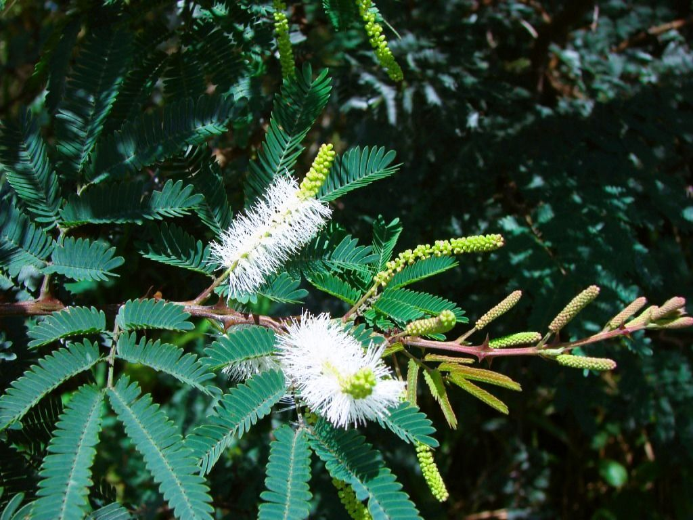

A Jurema e os portais que ela abre: uma jornada pela espiritualidade amazônica

"A Jurema não é uma planta para ser levada de volta ao conforto do cotidiano. Ela exige reciprocidade."
A Jurema (Mimosa tenuiflora) é uma das plantas mais sagradas do Brasil. Carregando séculos de conhecimento dos povos originários, ela não é apenas uma planta — é uma entidade. Uma mãe ancestral que guarda os mistérios entre o visível e o invisível.
NA TRADIÇÃO DOS POVOS ORIGINÁRIOS
Para os indígenas do Nordeste, o Catimbó da Jurema é um sistema ritual completo. Envolve rezas, defumações, pontos cantados e o uso cerimonial da bebida preparada com a casca da raiz. O objetivo não é a alteração de consciência por si só, mas o acesso a outros planos de existência.
NA UMBANDA E NO CATIMBÓ
Ao longo dos séculos, o culto da Jurema se misturou com o espiritismo e a umbanda, dando origem à Linha da Jurema — entidades ligadas à floresta, à mata fechada, aos mistérios da noite.
COMO SE RELACIONAR COM A JUREMA HOJE
— Defumação com cascas e folhas secas, invocando proteção e clareza
— Banho com folhas de Jurema para limpeza profunda
— Meditação com intenção de conexão com o espírito da planta
— Oferendas simples: água, flores brancas, vela acesa em gratidão
"Se ela chamou sua atenção até aqui, talvez não seja por acaso. A floresta sempre tem seus motivos."